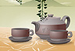

- Виды кофе
- 12.95
- 12.95
Добро пожаловать!
На данном сайте вы сможете найти интересующую вас информацию по кофе, а также найти для себе вкусный рецепт кофе. Также на сайте публикуются статьи информационного плана: история создания кофе, развитие кофе, а также гайды о том, как делать то, или иное кофе.
Если у вас есть какие-то вопросы, можете его оставить в разделе "Контакты", с указанием имени, странички в соцсети, адреса электронной почты.
Веб-сайт содержит несколько разделов, такие как: Главная, О нас, Статьи (включает Статью №1), Контакты, Карта сайта.Последние статьи
- Коротко о кофе
- Кофе - это напиток, приготовленный из жареных семян (кофейных зерен). Он родом из Эфиопии, но популярен во всем мире благодаря своему стимулирующему эффекту.
- Как сделать кофе
- Данная статья содержит информацию о том, как приготовить вкусное кофе за считанное время.
- История создания кофе
- Узнайте как создавалось кофе, изучив данную статью